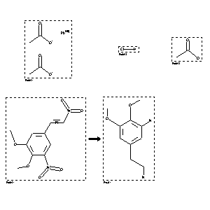

 |
| FA | RX(1); FLST(1); RX(1) |
Reaction (1 of 1)
| Reaction ID | 8127967 |
| Reactant BRN | 3692537; 1098214; 506007; 3154505 |
| Reactant | acetic acid ; lead (II)-acetate; hydrochloric acid; acetic acid; lead-cathodes; trans-5.b-dinitro-3.4-dimethoxy-styrene |
| Product BRN | 3272953 |
| Product | 3-amino-4,5-dimethoxy-phenethylamine |
| No. of Reaction Details | 1 |
Reaction Details (1 of 1)
| Reaction Classification | Chemical behaviour |
| Other Conditions | Electrolysis |
| Comment | Handbook |
| Citation Pointer | 1804997; Journal; Slotta; Szyszka; CHBEAM; Chem.Ber.; 68; 1935; 184, 187; |
Reference (1 of 1)
| Citation Number | 1804997 |
| Document Type | Journal |
| Authors | Slotta; Szyszka |
| CODEN | CHBEAM |
| Journal Title | Chem.Ber. |
| (Series) Volume | 68 |
| Publication Year | 1935 |
| Page | 184, 187 |